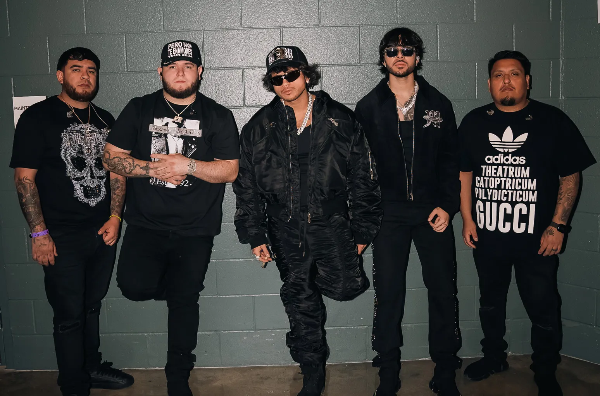

Fuerza Regida es un grupo musical originario de California, Estados Unidos, conocido por su estilo único dentro del género regional mexicano, especialmente en los corridos tumbados, los corridos bélicos y los norteños urbanos. La banda fue formada en 2015 y está integrada por Jesús Ortiz Paz (vocalista principal), Samuel Jaimez (requinto), Khrystian Ramos (guitarra), José "Pelón" García (tuba) y Moisés López (batería). Desde sus inicios, Fuerza Regida ha llamado la atención por su energía en el escenario, sus letras directas y su fusión de lo tradicional con lo moderno.El grupo ha sido parte fundamental del auge del nuevo movimiento del regional mexicano, colaborando con artistas como Natanael Cano, Peso Pluma y Grupo Frontera. Con millones de reproducciones en plataformas digitales, Fuerza Regida ha consolidado una sólida base de fans en Estados Unidos, México y otros países de habla hispana. Su música, que a menudo narra historias de vida callejera, lucha y éxito, ha generado tanto admiración como controversia, posicionándolos como una de las agrupaciones más influyentes de su género en los últimos años.
La dedicación y pasión de Fuerza Regida se refleja en cada uno de sus proyectos, donde fusionan tradición y modernidad para crear un sonido fresco y poderoso. Su capacidad para innovar dentro del género les ha permitido colaborar con grandes artistas y expandir su alcance más allá de las fronteras. Cada canción es una muestra de su compromiso por mantener viva la esencia del regional mexicano con un toque contemporáneo. Además, Fuerza Regida mantiene un vínculo muy cercano con su comunidad y seguidores, valorando la lealtad y el apoyo que les han brindado desde el principio. A través de sus redes sociales y presentaciones en vivo, buscan crear espacios de unión y celebración para todos los amantes de su música. Sin duda, su trayectoria sigue en ascenso, marcando un camino sólido y prometedor en la industria musical.
